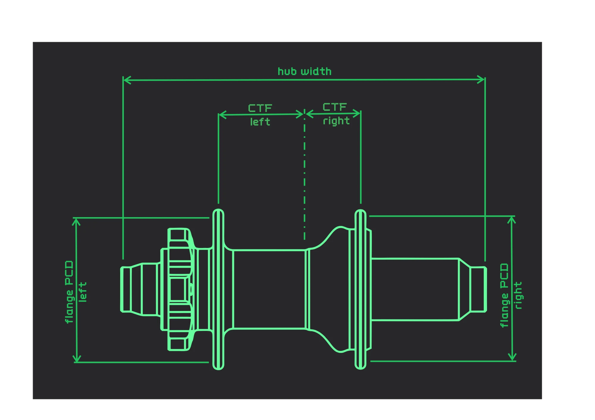

wheel dimensions — j-bend spokes
rim
ERD (Effective Rim Diameter)
mm
ERD = diameter at the spoke nipple seats inside the rim.
Measure: 2 spokes in opposite holes, tip-to-tip + 2× spoke Ø (2.0 mm).
Always verify preset ERD by measurement before building.
Measure: 2 spokes in opposite holes, tip-to-tip + 2× spoke Ø (2.0 mm).
Always verify preset ERD by measurement before building.
Total spoke holes
hub
Left flange PCD (NDS)
mm
Right flange PCD (DS)
mm
Left center-to-flange (NDS)
mm
Right center-to-flange (DS)
mm
Spoke hole diameter (flange)
mm
PCD = spoke hole pitch circle diameter on the flange.
Center-to-flange = axial distance from hub axle midpoint to each flange.
DS = drive side (cassette / sprocket). NDS = non-drive side.
Flange hole Ø: 2.5 mm for standard 2.0 mm gauge spokes.
Center-to-flange = axial distance from hub axle midpoint to each flange.
DS = drive side (cassette / sprocket). NDS = non-drive side.
Flange hole Ø: 2.5 mm for standard 2.0 mm gauge spokes.
lacing pattern
3-cross: standard pattern — each spoke crosses 3 others before reaching the rim. Best strength and fatigue resistance for road and MTB wheels.
hub dimensions

results